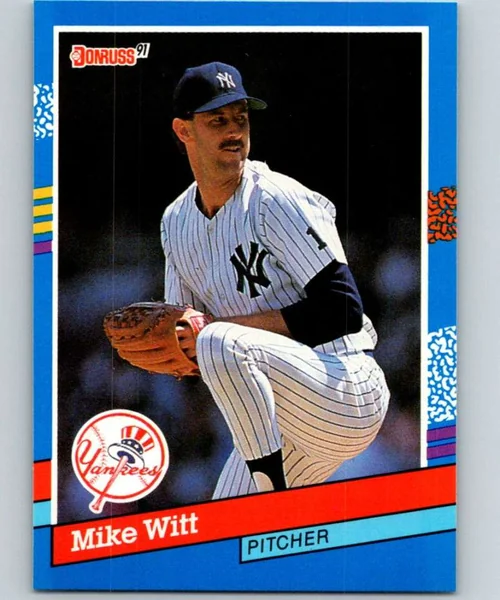

Mike Witt
Career Highlights & Facts
(Facts are AI-generated and may require verification)
- Achieved a perfect game on the final day of a regular season.
- Preserved a no-hitter by recording the final 2 outs in relief.
- Struck out 16 batters in a single game.
Would you like to find out more about Mike Witt?
the landmark Messersmith-McNally decision
was handed down by arbitrator Peter Seitz in December 1975, the California Angels quickly engaged in what some pundits referred to as “checkbook baseball,” a process in which financially well-off teams like the Angels and the New York Yankees sought to bolster their rosters by bidding for the best free agents on the market rather than develop talent in their own farm system. In the case of the Angels, owner
Gene Autry
was generous — some thought foolishly so — in lavishing contracts on players whose mission was to provide a quick fix to a roster badly in need of fortification, with his ultimate goal of reaching the World Series now hopefully in sight.
Early beneficiaries of the Messersmith verdict included
Bobby Grich
Don Baylor
, and
Joe Rudi
, who contributed to California’s success in winning the 1979 American League West Division title. However, several veteran pitchers signed during this time — among them
Bruce Kison
John D’Acquisto
, and
Bill Travers
— either did not meet expectations or became unfortunate examples of how money could be ill-spent on free agents.
But to label the California farm system as incapable of producing robust talent would be a mistake. Top prospects who emerged as major leaguers and went on to solid careers included
Frank Tanana
Jerry Remy
Carney Lansford
Ken Landreaux
, and
Willie Mays Aikens
, while
Dickie Thon
, another with “can’t-miss” potential, had his ability severely hampered only when he suffered a beaning just as he was establishing himself as an All-Star. The only problem for the Angels was that in the case of most of these latter players, they achieved the better part of their notoriety wearing the uniforms of other teams, as they had been traded away in the late 1970s and early 1980s for talent that, in some instances, gave questionable value in return.
It was into this milieu that a high-school pitcher who was raised in the shadow of Anaheim Stadium was delivered to the California Angels. The team was wise to cultivate the talent of Mike Witt and let him develop into the mainstay of their pitching rotation, most notably during one of the franchise’s most successful — and ultimately agonizing — seasons.
***
Michael Atwater Witt was born on July 20, 1960, in Fullerton, California, and spent his early years in nearby Buena Park. His physical development filled out to a height of 6-feet-7, leading many to assume that he would select basketball as his sport of choice. However, Witt maintained that baseball was always his first love and although playing on the court was enjoyable, he found that “basketball was so much more physical and intense, that the contrast to baseball provided a great way to compete in a different way, ultimately making the baseball player in me much better.”
Helped greatly by the influence of his father and oldest brother in his athletic ventures, Witt also benefited from the sacrifices that his mother made for the entire family, which also included Mike’s other five siblings. Upon entering Anaheim’s Servite High School, an all-boys Roman Catholic prep school, Witt excelled in baseball and basketball. Under the tutelage of coach Larry Toner, Witt’s stellar pitching — he won all 14 of his decisions during his senior year — led the Friars to the 1978 CIF Southern Section 4-A baseball championship, and he captured honors as the conference’s Player of the Year. There was no small amount of irony inherent in that title game: The contest was held at Anaheim Stadium, and Witt allowed only three hits in Servite’s 6-1 victory. The pitching rubber toed by Witt that day was the same one trod upon by Angel standouts Frank Tanana and
Nolan Ryan
, whom the youngster would see from the upper deck of The Big A before moving down to the field level later in the game “and watch three innings of Nolan Ryan up close.”
Witt’s deeds on the mound not surprisingly attracted the attention of baseball scouts, and just weeks before his 18th birthday he was chosen by California in the fourth round of the 1978 amateur draft. There followed a difficult choice: Would Witt enroll at Santa Clara University, a Jesuit institution, on a full baseball-basketball scholarship, or embark on a career on the diamond at the lowest stretches of the minor leagues? In spite of his mother’s doubts about passing up an outstanding collegiate offer, Witt opted for taking a chance on working his way onto the roster of the baseball team he loved.
Without breaking stride, Witt continued the torrid pace he set while finishing his time at Servite, going 7-1 with a 3.56 ERA for the Angels’ Pioneer League Rookie team in Idaho Falls. Witt’s first full year in professional baseball proved to be more challenging, however. The Angels fielded only one Class-A team in 1979, so Witt moved to Salinas — as did fellow 1978 draftee and future major-league slugger
Tom Brunansky
— but he was hit hard en route to an 8-10 record and an unimpressive 5.11 ERA. With Salinas again for part of 1980, Witt found his footing, winning seven of 10 decisions and posting a fine 2.10 ERA, but when he was promoted to Double-A El Paso, his mediocre record of 5-5 was accompanied by an inflated ERA of 5.79. The Angels noted his “difficulty in the pitching-rich Texas League” but also pointed out one particular flash of brilliance that came in a 13-strikeout performance, which included one streak of fanning seven consecutive batters.
Enamored by the emerging potential that prompted them to draft Witt in the first place, the Angels invited him to spring training in 1981 even though he had logged but a dozen appearances in Double-A.
Once in camp and displaying maturity beyond his years, Witt quickly began to establish himself among the starting pitchers thanks to a record of 3-0 and an ERA of 1.44 over 25 innings of work, and he forced manager
Jim Fregosi
’s hand to add him to the Angels’ Opening Day roster. General manager
Buzzie Bavasi
dismissed any notion that Witt was being moved too soon to the major-league level. “I rushed
Sandy Koufax
. I rushed
Don Drysdale
. I rushed
Carl Erskine
. If [Witt] can get them out, he can pitch with us,” said the former Brooklyn and Los Angeles Dodgers executive.
Also in agreement over Witt’s status was California’s player personnel director,
Gene Mauch
, who concurred with the decision to promote the budding star.
Witt had every right to assume that his address for the 1981 season would be California’s Triple-A affiliate in Salt Lake City, and he was stunned by his jump from Double-A to the major-league club. Reminiscing years later about his arrival in Anaheim, the pitcher said, “I won’t forget looking at the halo around the ‘A’ and the logo of the state of California with a star by Anaheim, thinking, ‘I’m actually wearing this [uniform].”
Maintaining his composure even though he had realized another dream, Witt acknowledged that his rise to the big leagues had been facilitated by pitching coach
Tom Morgan
. Morgan had been a pitcher for several major-league teams, including the expansion Los Angeles Angels in 1961. In his duties as the Angel pitching mentor, Morgan had been instrumental in developing Nolan Ryan into a formidable hurler, and his influence over Witt was similar. “[Morgan] helped me with my motion and all of a sudden, everything fell into place,” Witt said shortly after his rookie season.
As to be expected of a player trying to find his way as a new major-leaguer, Witt did show inconsistency. Yet, he was one of only a handful of rookie pitchers in the American League who landed a spot in their team’s rotation at the beginning of the 1981 season, along with
Steve Crawford
(Boston),
Jerry Don Gleaton
(Seattle),
Gene Nelson
(New York), and
Howard Bailey
(Detroit).
Entering the major leagues that year also had a labor-related peril when players went on strike and forced the cancellation of about one-third of scheduled games, mostly in June and July. Witt feared that his shaky performance through late May would spell a demotion to Salt Lake City as the likelihood of a work stoppage intensified. But he was spared the fate of time in Triple-A and instead became an unemployed pitcher during the strike. However, the interruption allowed him to regroup, and Witt completed his first season as an Angel with three impressive complete-game wins in which he allowed only four earned runs in 27 innings.
A portent of Witt’s future performances was growing evident. His most notorious pitch, the curveball, was drawing praise from inside and outside the organization. Witt’s manager, Gene Mauch, who had taken over from the fired Fregosi at the end of May, declared, “Once that kid realizes how valuable that thing he has in his right sleeve is, he’s going to be some kind of pitcher,” and Boston skipper
Ralph Houk
echoed the sentiment by stating, “He could be a big, big winner.”
The final accounting showed Witt’s record of 8-9 not being enough to merit AL Rookie of the Year laurels, but he was named the Angels’ top rookie. Witt led all Angels pitchers with 75 strikeouts — as well as 11 hit batters — and his ERA of 3.28 was second to veteran
Ken Forsch
among the team’s starters.
Entering the 1982 season, the Angels girded themselves for another run at the AL West pennant by executing a series of transactions that imported a host of veterans. Catcher
Bob Boone
, shortstop
Tim Foli
, and third baseman
Doug DeCinces
were acquired via trade or free-agent signing in order to address manifold weaknesses in the regular lineup. Owner Gene Autry also rolled the dice when he signed one of the biggest names on the free agent market,
Reggie Jackson
, the former Yankee finishing his contract in New York and looking to rebound from a mediocre performance in 1981. One of the Angels’ best prospects,
Daryl Sconiers
, expressed trepidation that he would follow in the footsteps of other young talent groomed by California only to be sent to another team in a trade. For his own part, Witt did his best to ignore such talk. “I never concerned myself with what the front office was thinking,” Witt said after his playing days were over. “I knew that everyone needed pitching, and that as long as I did my job, I would be okay.”
Witt opened the new campaign in less than spectacular fashion — he was chased in the third inning of his first start — but recovered to win three straight games. This Jekyll-and-Hyde pattern seemed to define Witt’s season, and for most of May he was banished to the bullpen to straighten out his difficulties. Witt posted three wins in August to keep the Angels in contention, but remained winless after his eighth victory on August 23. The final tally for his second season showed an 8-6 record, an ERA of 3.51, with 85 strikeouts in 179⅔ innings. Having his first taste of champagne when the Angels clinched the AL West, Witt also made one appearance in the American League Championship Series, a three-inning relief effort in Game Three at Milwaukee against the Brewers. He ended a Brewer threat by striking out
Charlie Moore
to close out the fourth inning but served up a two-run homer to
Paul Molitor
in the seventh, which became the margin of victory in Milwaukee’s 5-3 win.
Nevertheless, critics were still in Witt’s corner, including sportswriter
Peter Gammons
, who wrote, “No young pitcher in this league has a better curveball than California’s Mike Witt.” But Gammons’ comment also included this ominous foreboding: “But in his August 18 start against Boston, he threw [the curve] 11 of his first 13 pitches.”
The best weapon in Witt’s repertoire was en route to becoming his worst enemy, as an early overreliance on his best pitch began to sow the seeds of future physical problems from which he would not recover. Also included in later commentary by Gammons was an observation that dealt with a problem Witt
would
address. “There have been knocks against his ability to concentrate, but we’re talking about a kid who won’t be 23 until July [1983].”
If anything was working to Witt’s advantage besides his potential, his youthfulness served as a welcome counterweight to the age of Angels starters
Geoff Zahn
(37), Ken Forsch (36),
Tommy John
(40),
Dave Goltz
(34), and Bruce Kison (33).
In 1983 Witt stumbled badly leaving the gate when the season opened. He dropped his first three decisions in convincing fashion, allowing 14 earned runs in just 15 innings for an 8.40 ERA. Sent again to the bullpen because “suddenly, his breaking ball has a mind of its own,” Witt exuded confidence that he would be able to correct his problems, especially in light of his demotion coming so early in the campaign.
Pitching coach Tom Morgan was called upon to shepherd Witt through mechanical adjustments in his windup and delivery, both of which were determined to be askew. Angels manager
John McNamara
, in his first year at California’s helm, began to use Witt in short relief, thereby causing a tempest in the team’s bullpen when
Doug Corbett
took exception to being displaced as the closer.
But Witt delivered when called upon, and a shift in his role seemed to be in the making. In his first seven relief appearances, he pitched 12⅔ scoreless innings and picked up three saves through May 10. Given several spot starts over the following months, Witt returned to the rotation on July 21 but posted only a 3-8 record through the end of the season. Although Witt set a career high for games pitched (43) and had early success in the role of closer, the year was a step backward for him. Ending with a 7-14 record and an uninspiring ERA of 4.91, the 23-year-old was clearly at a crossroads as he looked ahead to his fourth major-league season.
Two critical factors entered into Mike Witt’s life, one in November 1983, and another shortly thereafter. The first was the culmination of a courtship with a young woman he had met in his first year with the Angels. Lisa Fenn worked as a secretary for the club and moved to the group-ticket sales department, and by late 1982 she and Mike began dating because “every time we turned around we ran into each other. … We got engaged right away and were married 11 months later.”
The nuptials brought a large degree of stability to Mike’s life, and he furthered his cause with the superb effort he displayed playing winter ball in Venezuela soon after his wedding. This experience in winter ball (in which Witt posted an 8-0 record) served as a springboard to help him at last reach the potential that was envisioned by so many observers inside and outside the Angels’ organization. “With my home life set, something just clicked for me in winter ball before that 1984 season,” Witt said years later, and recognizing that another dismal season-long performance might seriously damage his career, he added, “I found the [necessary] consistency and mental focus, knowing my job was on the line.”
In the offseason Angels manager McNamara took on a new pitching coach to replace the retiring Tom Morgan. Witt’s development as a pitcher had been reported as being “arrested by his inability to get along with Morgan,” but
Marcel Lachemann
, Morgan’s replacement, brought a “rosy disposition” with him that was expected to smooth over any previous personality clashes.
Despite having great success in the recently completed winter league, Witt lost any momentum from that experience when the American League season commenced. After a no-decision in his opening assignment — Witt pitched 7⅓ innings of scoreless ball at home against the Red Sox — he suffered through two starts in which he yielded six runs in each game, losing the first but escaping with a win in the second. After little better luck in his fourth start, in which Witt gave up five more runs in 7⅓ innings, he took the advice of first baseman
Rod Carew
and enlisted the services of Dr. Harvey Misel. Misel was a hypnotist who in 1975 helped future Hall of Famer Carew ignore pain from a pulled leg muscle. Witt employed Dr. Misel’s services to improve his concentration, and the results were dramatic: three complete games for three wins, with only two earned runs given up. But the bad vibes returned as Witt went winless in his last four starts in May. There ensued another turnaround in late June in which Witt reeled off a six-game winning streak and dropped his ERA to a season-low 3.36.
To be sure, more rough spots dotted the rest of his season, but Witt persevered and finally came into his own as the ace of the Angels staff. He led all pitchers in every major category: 15 wins (against 11 losses), 246⅔ innings in 34 starts, 196 strikeouts, and 9 complete games, which tied Geoff Zahn’s mark. He put down 16 Seattle Mariners on strikes on July 23, prompting Mariners manager
Del Crandall
to muse, “We can’t understand why he isn’t 18-0” instead of 11-7 at that point in the season.
The lessons about concentrating were evidently gaining traction, although Witt was more concerned about reaching a level of consistent performance than focusing on accumulating strikeouts. He also credited his wife with providing a “settling influence” in his life, although Lisa offered a different perspective of the ups and downs of their marriage.
Admitting that she was a bundle of nerves whenever her husband was scheduled to pitch in an important game, Lisa also noted the difference between an everyday player — who has a chance to redeem himself the next game after a poor performance — and a starting pitcher. “There are four or five days between games. That’s great if he’s pitched a good game, but if he doesn’t feel good about the last game, that’s four or five days of brooding.”
Witt’s performance against the Mariners matched
Dwight Gooden
for the best single-game strikeout total in the majors in 1984 (Gooden had two 16-K games in September), and his 15th victory was most special, coming on the final day of the season against the Texas Rangers at Arlington Stadium. Playing only for pride and the chance to finish the year at .500, the Angels sent Witt to the mound and received the ultimate performance from their new workhorse.
Retiring all 18 Texas batters through six innings, Witt finally was staked to the only run he would need — Reggie Jackson plated Doug DeCinces on a fielder’s choice in the top of the seventh — and then vanquished the final nine batters he faced to
complete the 11th perfect game in major-league history
.
Witt’s only other similar feat came in his days playing Little League baseball in Fullerton, when he pitched a no-hitter, and his gem against the Rangers proved to be a farewell gift of sorts for his manager, as John McNamara was relieved of his duties and would be replaced by Gene Mauch for the 1985 season. The notoriety Witt received from his breakthrough season culminated in a cameo appearance on
The Jeffersons
television show.
After improving their record from 70-92 in 1983 to 81-81 a year later, the Angels looked forward to continuing their rise and breaking the bonds of another second-place finish. The team’s media guide featured a caption exclaiming “We’re So Exc!ted”
[sic],
but such glee did not translate to a promising beginning to Witt’s 1985 season. Putting himself in a hole thanks in part to home-run balls he threw in each of his first three starts, Witt was 0-3 before finally pitching the type of game expected of him, a three-hit whitewashing of the Mariners in Seattle on April 25. Had he been given a bit more offensive support, his record for the first half of the year would have been better than 6-6, but most encouraging was his stretch from June 12 through September 12, when he was victorious in 10 of 11 decisions. Solidifying his place in the rotation, Witt lasted deep into many games, allowing Mauch to give the bullpen a rest, especially during the summer months. This expenditure of innings, however, spelled fatigue late in the season. In September Witt failed to last beyond the seventh inning on four occasions, but he caught a second wind on October 1 to beat Kansas City and put the Angels a game ahead of the Royals as the two teams dueled coming down the stretch. Five days later Witt also was the winner in the season’s finale — once more against the Rangers in Texas — that put California in a disappointing second-place finish, one game behind eventual World Series champion Kansas City.
There was no doubt that Witt’s stock was still on the rise. Repeating his 15-win season of 1984 and again leading Angels pitchers in starts (35), innings (250, which also enabled him to collect a $150,000 bonus), ERA (3.56, among starters), and strikeouts (180), Witt validated the faith expressed by the club in its three-year, $2.75 million contract that ran through 1987. With a rotation bolstered by another promising young starter who had gained a major-league toehold, the 1986 season shaped up to be possibly the best in the Angels’ history.
Kirk McCaskill
, a Canadian who had been a standout hockey player at the University of Vermont, joined Witt and veterans
Don Sutton
and
John Candelaria
to give Mauch a formidable quartet on the mound, with closer
Donnie Moore
anchoring the bullpen. Among regular players was a fine blend of speed, power, and run production that positioned California to unseat the Royals as AL West champions.
Commencing the 1986 campaign better than others, Witt furnished quality innings for much of the first half of the season, and his 9-7 record with 3.08 ERA earned him a selection to the American League All-Star team. It was in August, however, when he lorded over opponents to such an extent that he garnered AL Pitcher of the Month honors. Winning all five of his starts, including three complete games and one shutout, Witt permitted only a single earned run in 43 innings for a 0.21 ERA, and as an improvement over the previous year, he averaged eight innings in his six starts during September.
After moving into first place in the AL West on July 7, the Angels never looked back, building a 10-game lead on September 26 to clinch the division title. Witt’s statistics spoke for themselves as he walked away with club MVP honors in voting by his teammates: a record of 18 wins, 10 losses, an ERA of 2.84 in 269 innings, in which he gave up only 218 hits and fanned a career-high 208 batters with just 73 bases on balls. Reporting in
The Sporting News
, Moss Klein observed that Witt “may be second only to
Roger Clemens
as the league’s most feared starter,” and pointed out that four of his early-season losses could be attributed to lack of run support.
Praise from Witt’s manager — “He’s no longer ‘young Mike Witt’” — indicated that Gene Mauch appreciated the hurler having blossomed into a mature and outstanding pitcher, and journalist Stan Isle told readers of his column that the Elias Sports Bureau found Witt to be among a select group of players in either league that it classed as “underrated.”
Now the center of attention, Witt was nonetheless blasé regarding the tributes. “I know how my teammates feel about me even without putting it into words,” he said on the eve of the American League Championship Series against Boston. “I don’t get caught up in being compared to other people.”
At season’s end, Witt finished third in voting for the AL Cy Young Award and placed 12th in balloting for the league’s Most Valuable Player.
Encomiums aside, Witt’s regular season had closed on a sour note as he attempted to become the Angels’ first 20-game winner since Nolan Ryan turned the trick in 1974. Those hopes were dashed when he lost to the Rangers in his final home start on September 28 after giving up a grand slam to
Pete Incaviglia
. Witt was inspired to do his best on the field, but as Tom Singer of the
Los Angeles Herald Examiner
noted, the pitcher also was motivated by an undercurrent of revenge, namely “getting back at reporters for what he considered unfair treatment in his formative seasons.”
According to Singer, throughout the 1986 season Witt “spent time dodging reporters, or giving them curt answers when cornered,” tactics that led to Witt being unflatteringly dubbed “the Earl of Surl.”
Witt’s loss to Texas — and with it the chance for a 19th victory — meant that it would be impossible for him to win 20 with only one more scheduled start remaining. After the defeat, Witt unloaded his suppressed feelings to the gathered scribes: “Maybe I’ve been waiting five years for this year, so you guys could come to me and get nothing [to write about]. I hope you’re frustrated.”
Harboring his bile about criticism in the press directed his way as he struggled in the early 1980s to establish himself in the Angels rotation, Witt admitted that his recent evasiveness was deliberate. He disdained the way the press treated him compared with veterans like Rod Carew, Reggie Jackson, and Doug DeCinces, who in Witt’s view were given much more latitude when their performances were subpar. Kirk McCaskill confessed that Witt was “very bitter” about the predicament, and Witt considered taking teammate
George Hendrick
’s lead by not speaking at all to the media.
Coming at a time when Witt was also thoughtfully involved with charity work for the Pediatric Cancer Research Center at Children’s Hospital of Orange County, the unfortunate episode tainted what otherwise should have been one of the high-water marks of Witt’s career.
And there still remained the issue of the next hurdle to the World Series, the ALCS, which opened in Boston’s
Fenway Park
. To no one’s surprise, Mauch chose Witt as the Game One starter, and the demons haunting the former Phillies manager since 1964 — to say nothing of the 1982 debacle in which his Angels blew a two-games-to-none lead over the Brewers — were seemingly in the process of being exorcised after
Witt dispatched the Red Sox and their ace Roger Clemens 8-1 in a complete-game effort
. Allowing just five hits and two walks, Witt benefited from an early four-run outburst and subsequent three-run cushion in the eighth inning.
Although McCaskill suffered a loss in Game Two
, the Angels were satisfied at splitting the first two contests on the road as the series moved to Anaheim.
In
Game Three
John Candelaria outdueled
Oil Can Boyd
, 5-3, and when the Angels staged a frantic rally with three runs in the bottom of the ninth and pushed a run across in the bottom of the 11th to take
Game Four
, 4-3, California was one victory away from reaching the World Series for the first time. Game Five meant that it would be Mike Witt’s turn to take the mound, and if he could pitch anywhere near as well as he had in the series opener, the Angels were well-poised to claim the American League pennant.
On the warm, hazy afternoon of October 12
, over 64,000 fans packed Anaheim Stadium in heightened anticipation. “Boston at Witt’s End,” read one bedsheet poster hanging from the upper deck, and the momentum from the previous night’s victory was palpable. Witt and
Bruce Hurst
, who took the mound for Boston in the hope of holding the Angels at bay, pitched a scoreless first inning, but the Red Sox struck in the second when
Jim Rice
singled and
Rich Gedman
followed two batters later with a stinging line-drive home run to right field. Bob Boone cut the lead in half with a solo shot leading off the third, while Witt had his way with the Boston lineup, easily retiring Red Sox batters — with the notable exception of Gedman, who belted a double his second trip to the plate in the fifth. Hurst was giving no quarter and held the Angels in check until two were out in the sixth with the score at 2-1. Doug DeCinces smacked a double to right-center field, and
Bobby Grich
followed with a drive to deep center field.
Dave Henderson
, substituting for the injured
Tony Armas
, drew a bead on the fly ball and leaped to make what would have been a phenomenal catch at the wall, but in doing so, Henderson tipped the ball over the fence for a most improbable home run, giving the Angels a 3-2 lead.
Buoyed by the change in score, Witt set down three of the next four hitters in the seventh, Gedman again playing the bête noir by singling to right. In the home half of the inning, the Angels padded their margin with runs courtesy of
Rob Wilfong
’s pinch-hit double and a sacrifice fly by
Brian Downing
. In the top of the eighth, California led 5-2, and Witt retired the side on nine pitches, but he flagged in the ninth, the most infamous inning in Angels history. Witt surrendered a base hit to
Bill Buckner
, who then gave way to pinch-runner
Dave Stapleton
. Rice was caught looking at a third strike, but Don Baylor — Witt’s erstwhile teammate — drove a home run to left to cut the Boston deficit to one run.
Dwight Evans
was then retired on a popup to DeCinces at third, and the only thing now standing between the Angels and the World Series was Rich Gedman.
In light of Gedman’s performance this day against Witt — made all the more ironic given that Gedman was a dreary 2-for-24 lifetime against Witt entering Game Five — it made sense that Gene Mauch would go to his bullpen, particularly left-hander
Gary Lucas
. The previous evening, Lucas had struck out the Boston catcher swinging on a 2-and-2 pitch, so the change in pitchers seemed a natural fit for the circumstances. Witt retired to the dugout as the crowd cheered and throbbed with anticipation of the final out. The ace had done all that could be expected of him by putting forth a yeoman effort to bring the Angels within one out of the AL title. But for California, ignominy followed: Lucas plunked Gedman with the only pitch he threw, and when Mauch brought in closer Donnie Moore to snuff out the threat, he served up a homer to Dave Henderson on a 2-and-2 pitch, giving Boston a 6-5 lead. Although the Angels tied the score in the bottom of the ninth, they eventually lost in the 11th inning, the series moving back to Boston, where California lost Games
Six
and
Seven
, a pair of routs that left everyone associated with the Angels — players, management, and fans — stunned at the improbable outcome after being one strike away from playing in the World Series.
In a revealing interview a few months after the ALCS meltdown, Witt displayed an extraordinary amount of candor in answering questions about the Game Five collapse and how the aftermath would affect himself and the team as they tried to recover. His wife, Lisa, saved various game accounts from the newspapers, which Mike read on occasion over the winter and made him understand further how close he had come to clinching the pennant for the Angels. Reliving the final inning, Witt said that the base hit by Buckner to lead off was on a pitch that he had retired the Red Sox first baseman with his other trips to the plate, and the strikeout of Rice on three straight pitches came on a delivery that he could not recall. But when Baylor touched him for the two-run homer, Witt “couldn’t believe it at the time. … The last thing on my mind was that it was a home run. … He just went out and got it [by using] the fat part of the bat.”
Bearing down on Evans, Witt coaxed the popout on an 0-and-2 offering, a situation in which DeCinces told Witt that he had handled the Boston right fielder “perfectly.”
Naturally the outcome of the game — to say nothing of the rest of the series — “was a huge letdown. To see 20,000 people lined up around the rail ready to jump down [to celebrate] …
we had it!
”
Lastly, the entire club was shell-shocked in the knowledge of having to return to Boston: “The mood of the team during those last two games. … I don’t even remember playing there.”
Recognizing a possible repeat of the psychological damage that lingered after the 1982 ALCS loss to the Brewers, Witt looked forward to 1987 because the nucleus of the pitching staff was ostensibly intact, and the record shows that new faces from the farm system, such as
Jack Howell
Mark McLemore
, and
Devon White
, would be on hand to augment a lineup solidified by 1986 wunderkind
Wally Joyner
and
Dick Schofield
, a very capable shortstop. Witt anticipated that coming so close to a league title in 1986 and playing before huge crowds would have the benefit of motivating the Angels to execute with the same intensity. “It made us
real
hungry,” he said, and now it was up to players and manager to perform.
When asked about his personal role as a team leader, Witt preferred to let his work on the mound do the speaking rather than serve as a cheerleader in the clubhouse, an attitude showing a large degree of maturity on his part by recognizing the possibility that he could be overstepping his bounds by becoming too vocal.
But the record also shows that in spite of the Angels’ best efforts to put the ALCS demons to rest, the team ruined a hopeful start to the 1987 season by going into a tailspin in the latter part of May, losing 12 of their last 15 games in the month, including nine in a row. Although they recovered to reach second place by early August, the bottom fell out for good in September due to a 7-19 record, and the Angels landed in the basement of the AL West, tied with Texas for sixth place. Witt did lead by example, as evidenced by his naming as Player of the Week for the first week of June, and his 11 wins with a 3.31 ERA at the halfway point of the season earned him a spot on the American League All-Star team for the second time.
However, Witt’s 5-9 record after the break contributed to an ERA that swelled to 4.01 by the end of the campaign. The final log showed 16 wins, 14 losses, and a team-high 192 strikeouts, and Witt suffered from a lack of run support, as he was backed by two runs or less in eight of his losses. Among his 36 starts — the most by an Angel pitcher since Nolan Ryan’s 37 a decade earlier — were 10 complete games. Not known at this time was the fact that Witt had ascended as high as he would rise as a major-league pitcher, and a new and disturbing trend began to emerge in his performances.
Although Witt was the mainstay of the rotation, “there were evident cracks in his dominance,” and as questions regarding his right shoulder persisted as the season played out, Witt, “[who] was abrasive with the press in the best of times … was defensive about the condition of the shoulder.”
As his fastball, once in the low 90s, waned to the mid-80s, the issue of a salary drive with free agency pending certainly had to be in his mind, too: Witt was in the final year of his three-year deal, and he wanted to pitch at least 240 innings in order to collect a $250,000 bonus. In the previous two seasons, he reaped a total of $350,000 for innings pitched and sought a repeat reward. In 1987 he crossed the threshold by lasting until at least the eighth inning in 16 of his 36 starts, but doing so turned out to be a Pyrrhic victory.
Once on the market, Witt attracted the attention of the New York Yankees — who were always willing to spend, and likely bid up the signing price for him — and he later confessed, “I was signed, sealed, and delivered to New York. … But [George] Steinbrenner gave me a week before he wanted to announce it, and during that week, I changed my mind.”
The change of heart — because of both his and his wife’s family ties to the area — returned him to Anaheim for $2.8 million over the next two years. If any doubts nagged California management, it was not obvious in the sentiments expressed by Gene Mauch or general manager Mike Port. Mauch expected that with offseason rest and recuperation, “that good Mike Witt fastball [will] come back,” and Port defended the new contract by offering Witt’s ability to reach 247 innings as proof of his well-being.
“If we had any suspicions, we wouldn’t have spent two months pursuing him.”
In an attempt to regain the form he displayed in the course of helping the Angels win the AL West, Witt employed modern technology by “enlist[ing] biomechanics experts to dissect his delivery with the use of computer graphics.”
Pitching coach Marcel Lachemann helped him with small adjustments that seemed to make a huge improvement, and Witt blazed through 1988 spring training undefeated in four decisions. In 21 innings, Witt yielded only three walks while fanning 22 batters. The Angels could only hope for a continuation of his renaissance during the regular season, but such was not the case. Under new skipper
Cookie Rojas
, Witt was selected for another Opening Day start, yet inconsistency remained the lanky right-hander’s bugbear, as he finished April with losses in two of his three decisions and an alarming 5.29 ERA. The month of May was no kinder, as Witt lost four straight before salvaging a win with a shutout of the Orioles. “There’s nothing physically wrong with him, I’m sure of that,” pled Rojas in defense of his faltering ace, yet Lachemann remained concerned because “something’s out of whack.”
The eight bases on balls Witt issued in a May 18 start — along with sloppiness shown by others on the field — were more than GM Port could bear, and he threatened to make some trades in order to shake the Angels from their lethargy.
Rojas urged Witt to forgo his strategy of “nibbling at the plate with breaking pitches” and challenge hitters with more fastballs, a tactic that paid off when he reeled off four straight wins in June.
From this point until the end of the season, Witt’s ERA hovered just above 4.00, but to his credit, his competitive fire propelled him to boost his record from a dismal 1-6 in mid-May to 13-12 by early September. His victory on September 8 was his 100th in an Angels uniform — and also was a game in which he failed to fan a single batter — but a skein of four defeats to end that month produced a final accounting that hinted at a worrisome downturn: 13-16 record, 4.15 ERA — a career high — with 263 hits allowed in 249⅔ innings, and only 133 strikeouts, his lowest total since 1983. The sway that he had held over American League hitters had embarked on a decidedly downward trend, and the team in general reflected the decline by finishing 75-79 under Rojas (who was fired in late September) and going winless in eight games with interim manager
Moose Stubing
in charge. The Angels’ fourth-place finish made the near-AL pennant of 1986 seem like ancient history.
Former Texas skipper
Doug Rader
was brought in to revive the Angels’ fortunes for 1989. Not only was a new field leader in the dugout, but Mike Port was busy importing new talent — including some reclamation projects — that he hoped would ignite the Angels on several fronts.
Lance Parrish
Claudell Washington
Bob McClure
, and
Bert Blyleven
were added to the roster and fueled a resurgence that kept California in a position to overtake the reigning AL champion Oakland Athletics. In spring training Moss Klein told readers of his
Sporting News
column, “California has an intriguing starting rotation. The names are impressive: Mike Witt, Bert Blyleven, Kirk McCaskill, and
Dan Petry
, along with
Chuck Finley
.”
Petry became a nonfactor, but picking up the slack in decisive fashion was a rookie southpaw from the University of Michigan who captivated crowds and inspired athletes of all abilities.
Jim Abbott
had been born without a right hand, but he did not let this handicap block his path to a superb collegiate career. The native of Flint, Michigan, was named to the US Olympic team, was the winning pitcher in the Gold Medal game, and subsequently was signed as the Angels’ top pick in the 1988 draft. Jumping right into the rotation without spending a day in the minor leagues, the 21-year-old Abbott finished with 12 wins and as many loses, but impressed teammates, coaches, opponents, and fans alike with his grit and athleticism.
As stunning as Abbott was, so too were Blyleven and Finley, the former posting a 17-5 record after appearing to be at the end of his career following a 17-loss season in 1988 that was marked by a 5.43 ERA, the latter enjoying a breakthrough season of his own — as had Witt years earlier — with 16 wins and a nifty 2.57 ERA. And having recovered from several arm ailments over the past two years, McCaskill provided a pleasant surprise with 15 wins along with a 2.93 ERA. But the odd man out was Mike Witt, whose value continued to fall.
Digging himself a hole once again to commence the season, the erratic Witt quickly bottomed out on April 25 when he served up home runs to three Baltimore hitters who collectively were batting less than .200. “You’d think he could locate the ball more effectively and consistently,” grumbled Rader after the Orioles’ slugfest, but Witt persevered and his manager continued to send him to the mound every fifth day.
Still exhibiting his workhorse ethic, Witt pitched into the seventh inning during 21 of his 33 starts, and in 11 of his losses the offense backed him with only two runs or less. Neither did the bullpen do Witt any favors by relinquishing leads that he had turned over to them. But there were only five complete games among his starts, not a single one of them a shutout, and the team’s media guide later noted that Witt “has posted losing records both at home and on road in each of last two seasons.”
In a
Sporting News
feature article lauding the vaunted starting rotation, Witt was referred to as “the titular ace of the staff,” and was “losing speed, stuff and games at an alarming rate since 1986 [and] was only a stopper on the payroll” with his $1.4 million salary.
Lachemann, his pitching coach, held out hope for Witt to get on track, but “he no longer blows people away, and has been a frustrating holdout from [catcher Lance] Parrish’s game of pitching inside.”
Witt was victimized by home runs at a disturbing rate in the first half of season — 18 times — and at least was able to keep the ball in the park at a more acceptable rate in the second half, with only eight surrendered. Yet at just 28 years of age, Witt had evolved into an enigma for which there appeared no easy answer. He pitched his final game of 1989 at the end of September, his 15th loss against nine wins, and in 220 innings compiled an ERA of 4.54 with only 123 strikeouts to show for his efforts. That finale versus the Texas Rangers was a stark contrast to his season-ending perfect game — also against Texas — five years earlier. This time he failed to survive the seventh inning and was charged with four runs, all earned.
In the postseason, Witt was not eligible for free agency but could submit to salary arbitration if he was unable to agree with the Angels on a new contract. Astonishingly, Angels owner Gene Autry showed his generous side once more and brought the flagging ace back at a very modest salary cut of only $100,000, with Witt’s one-year deal calling for $1.3 million. But by the time Witt signed in mid-January of 1990 for the coming season, he had little chance of holding a spot in California’s rotation because Autry had already lavished a $16 million contract on one of the prime free agents available, former Seattle Mariners ace
Mark Langston
, who also was a three-time strikeout leader of the American League and a Gold Glove winner.
With Witt having fallen to fifth best of five Angels starters, it was obvious that he would cede his place in the rotation to Langston, and he faced the reality of time in the Angels bullpen or perhaps being traded in the very near future. As spring-training camps got under way, Witt was resigned to his fate, saying, “As long as I’m in the big leagues, that’s all that matters.”
The cover of the team’s 1990 media guide spoke volumes about the players it expected to be the key personnel that year: pitchers Langston, Finley, and Blyleven, along with veteran slugger Brian Downing, Wally Joyner, and
Chili Davis
. One of the franchise’s best pitchers had been relegated to the role of an afterthought.
As Opening Day drew near, Mike Port sought help for the outfield, and it was believed that the Yankees’
Dave Winfield
— a resident of nearby Beverly Hills — might be lured to Anaheim via a trade if the 10-and-5 clause of the outfielder’s contract could be amicably brokered.
As rumors swirled that Witt would be sent to New York in exchange for Winfield, Witt had been relegated to the Angels bullpen, but the demotion allowed him to participate in one of the game’s more unusual mound feats. In California’s third game of the season, Langston was slated to make his home debut in an Angels uniform, which he did in spectacular fashion by throwing seven innings of no-hit ball against his former club, the Mariners. But a labor dispute between the Major League Baseball Players Association and the owners resulted in a lockout that shortened the timeframe of spring training, and with all pitchers not having the full benefit of a normal preseason preparation period, Langston was pulled by manager Doug Rader in order to prevent the southpaw, whose pitch count was at 99, from pitching too much too early.
Called from the pen to complete the game was Witt, who entered to a mixture of cheers from fans wishing him well and boos from those who preferred to see Langston remain in the contest in hopes of finishing it on his own. But Witt did not disappoint, retiring all six batters he faced — four on groundballs to second along with a pair of strikeouts — to preserve the no-hitter.
Credited with a save, Witt claimed, “The fact that it was a no-hitter wasn’t really foremost in my mind. It was in my mind, but it was a 1-0 game, and the foremost thought in my mind was keeping guys off base, because it would have brought the winning run to the plate.”
When questioned about the significance of the game vis-a-vis his new role in the bullpen and the persistent trade rumors, Witt frankly admitted that he would rather be in his accustomed place in the starting rotation. “I have three ‘druthers,’” he declared. “My first would be to start here [with the Angels], my second would be to start somewhere else, and my third would be to pitch here from the bullpen.”
Stoically trying to ignore the trade talk, Witt had some difficulty adjusting to his job as a reliever. He blew two save opportunities that resulted in losses and lost a third game while pitching into extra innings. But by May 10 Witt had pared his ERA to a tidy 1.77 in 20⅓ innings while allowing only one home run; then three days later the
New York Times
reported that Witt had been put in a situation that was not among his three “druthers.” “Witt Appears Headed For Yanks and Bullpen,” read the headline, meaning that relief duty for a team other than the Angels was now on Witt’s immediate horizon. “It’s not something I look at as being permanent,” he told the
Times
. “I have no aspirations of being the next
Dennis Eckersley
.”
Pointing to the fact that he was 29 years old, Witt was prepared to return to a starting role to build on the numbers — especially wins — he had accumulated serving in a rotation.
When completion of the trade for Winfield seemed imminent despite the continuing legal wrangling over his 10-and-5 status, the Angels revealed how anxious they were to move their erstwhile ace. The club said that the Yankees could keep Witt regardless of whether an arbitrator ruled in favor of Winfield and allowed the outfielder to remain in New York. Now officially displaced as an Angel, Witt forged ahead by joining the Yankees, who were on the road in Seattle.
Once donning pinstripes, Witt took a place in the New York rotation and pitched into at least the sixth inning in his first four starts, resulting in three no-decisions and one loss. However, in his fifth start, on June 8, he heard a dreaded “pop” in his arm during the second inning. Promptly removed from the game, he was placed on the disabled list for the first time in his career. Laid up for two months and refusing to serve a rehabilitation assignment in the minor leagues, Witt returned and remained in the Yankees rotation despite several inglorious outings. Besides his professional pride and work ethic, there was another motivating factor for Witt to perform well: major league owners were awaiting the outcome of a collusion judgment, and if they found themselves on the losing side of the arbitrator’s ruling, several players — including Witt — stood to gain free agency. Witt’s two-month salary drive enabled him to finish his service in the Bronx with a record of 5-6 and an ERA of 4.47 in 96⅔ innings. The fact that he remained in the rotation and came back after his injury to pitch at times like the old Mike Witt — including one shutout and another complete game as well as five other appearances in which he lasted into the seventh inning — furnished enough proof to the Yankees that he was worth keeping, even though Witt informed close friends that he might seek a new address on the West Coast should free agency become a reality.
In early December Witt indeed was allowed to test the open market but New York also offered salary arbitration to him. He attracted the attention of the Toronto Blue Jays, but
George Steinbrenner
’s checkbook was the biggest factor in persuading Witt to remain a Yankee. He re-signed with the Yankees for three years at a total of $8 million, a staggering sum considering the injury he had recently suffered. And during spring training of 1991, the dark clouds above Witt began to take on a more ominous form; though he was expected to be the Yankees’ starter on Opening Day, a strain in his right elbow grew increasingly worrisome. New York pitching coach
Mark Connor
was content to let Witt skip two starts in the Grapefruit League and remarked, “We’re not ready to panic. Mike feels that he can throw right now. We want to proceed with caution.”
A mechanical adjustment was believed to be the cure, yet Witt himself was mystified by the existence of any discomfort. Again landing on the disabled list, he was in danger of becoming another overpaid free agent unable to perform due to injury. Along with several other notable starting pitchers, Witt landed on Moss Klein’s “season-opening A.L. All-Disabled List staff” and did not make his first appearance until June 7.
His start that day was a five-inning, no-decision, but the following week he bowed out after just 17 pitches to four Minnesota batters and was done for the year. With an 0-1 record and a 10.13 ERA in a mere 5⅓ innings, Witt now faced the grim reality of Tommy John surgery to have any hope of a return. In late July he returned to Southern California and on July 25, he underwent an operation on his right elbow to replace the ulnar collateral ligament and faced a full year of rehabilitation. His only credited work in 1992 came in three starts with the Yankees’ Gulf Coast team, but Witt seemed to be on the right track. He posted a 1-0 record, allowed no earned runs in 12 innings, and fanned 13 batters.
Witt soldiered on, and after nearly two years away from the game, during which time he “lived with an asterisk beside his name that denoted his constant presence on the disabled list,” he at last returned on April 25, 1993.
After 96 pitches, Witt was lifted by manager
Buck Showalter
, who was inclined to not read too deeply into the pitcher’s statistically unimpressive line of five hits in four innings, five runs — all earned, including four courtesy of a grand slam — two walks, and one hit batter. The skipper was “very satisfied” by the “good stuff” he saw Witt delivering, and in his next start Witt spun seven innings of three-hit ball — including a solo homer — saying afterward that his elbow “felt fine, never better.”
Witt also attributed his successful rejuvenation to his brother Steve, a former prospect in the Philadelphia Phillies’ system who served as his catcher during workout sessions at Witt’s home.
One good outing begat another, and Witt compiled a modest string of starts in which he held the opposition in check and ostensibly secured his place in the Yankee rotation. But he slumped during a four-game stretch in which his ERA approached 12.00, and on June 1 his right elbow was bruised when it was struck by a line drive off the bat of Cleveland’s
Paul Sorrento
, and Witt took two weeks off before returning against the Twins. That game proved to be Witt’s finale, a no-decision in which he lasted until the sixth inning. Placed on the disabled list the following day — and five weeks short of his 33rd birthday — he would never again appear in a major-league game. Granted free agency once more at the end of the season, Witt was done as a major-league pitcher, and he would retire to his home in Southern California to spend time with Lisa and their children, daughter Kellen Marie and sons Justin and Kevin. He would take much pleasure in serving as a pitching coach at Dana Hills High School in the late 1990s and as a varsity assistant and pitching coach at Santa Margarita High School beginning in 2000, as his sons followed their father’s footsteps onto the diamond.
***
At the height of his fame, Mike Witt divulged some tips for youngsters regarding his work ethic and his philosophy on pitching. While instructing the proper technique for gripping a curveball, he presciently warned underage pitchers on the hazards of throwing that pitch. “Wait until you are at least 15 years old. If you throw too many when you are young, you are bound to hurt your elbow,” he cautioned.
Generally speaking, Witt distilled his guidance to one basic suggestion, namely practice. This was advice perhaps offered in an easier-said-than-done tone, because Witt himself fell victim to the siren song of the curveball, which he used to devastating effect, but it was also a pitch that came with the associated cost of harm to his own well-being.
Witt’s achievements over 10 seasons in Anaheim — 109 wins against 107 losses, 3.76 ERA, and 1,283 strikeouts as well as selection to two American League All-Star teams — earned him induction into the team’s Hall of Fame on August 22, 2015. When the curveball worked for Witt, it was one of the best in baseball during the mid-1980s. That signature pitch enabled him to etch his name in the record books for a perfect game and, a bit more unusually, a shared no-hitter, but his bringing the California Angels to within one out their first American League pennant may provide the best defining moment of Witt’s career. The story of a local kid with star potential playing for his hometown team appeared to reach its peak in Game Five of the 1986 ALCS, the climax of a steady ascent to the precipice of a championship, only to have the game’s ending spoiled by fate. So too was the trajectory of Witt’s years in baseball such that his rise seemed destined to place him in company with Cy Young Award winners, only to have the latter stages of his big-league journey hampered by injuries. In both that single game and in his career, for Mike Witt it was so close yet so far.
This biography appears in SABR’s
“No-Hitters”
(2017), edited by Bill Nowlin.
In addition to the sources cited in the notes, the author also consulted:
articles.latimes.com.
baseball-reference.com.
1993 Sporting News Baseball Yearbook.
Orange County Register.
Angels VIEW Magazine
, 1982 Vol. 1 Book III.
1991 New York Yankees Yearbook.
Carew, Rod, and Ira Berkow.
Carew
(New York: Simon and Schuster, 1979).
Siegel, Barry, ed.
1991 Official Baseball Register
(St. Louis: The Sporting News, 1991).
Siwoff, Seymour, Steve Hirdt, and Peter Hirdt.
1987 Elias Baseball Analyst
(New York: Collier Books, 1987).
Mike Witt, email correspondence with author, October 15, 2015.
Marcia C. Smith, “Mike Witt ’78 Inducted into Angels Baseball Hall of Fame,”
Orange County Register
, August 23, 2015.
1981 California Angels Media Digest
, 139.
John Strege, “Young Angels Get Big Surprise,”
The Sporting News
, May 2, 1981: 18.
Maria C. Smith.
1982 California Angels Media Digest
, 57.
Peter Gammons, “AL Beat,”
The Sporting News
, April 25, 1981: 7. Two other rookies, Dave Righetti of the Yankees and Boston’s Bob Ojeda, also joined the crop of notable young AL talent.
Mauch and Houk quoted in
1982 California Angels Media Digest
, 57.
Witt email correspondence.
Peter Gammons, “AL Beat,”
The Sporting News
, August 30, 1982: 25.
Peter Gammons, “AL Beat,”
The Sporting News
, December 27 1982: 46.
John Strege, “Witt Looks for His Bender in Bullpen,”
The Sporting News
, May 2, 1983: 16.
“Lisa Witt’s Magic Kingdom,”
Halo Magazine
, 1986: 55.
Marcia C. Smith.
Tom Singer, “Lachemann Eager to Rebuild Staff,”
The Sporting News
, February 13, 1984: 38. Years later, Witt nonetheless credited Morgan for success he attained with the Angels.
Tom Singer, “K’s King Witt ‘Concentrates,’ ”
The Sporting News
, August 6, 1984: 18.
Ibid.
“Lisa Witt’s Magic Kingdom.”
At the time, Witt’s was considered the 13th perfect game, but a decree requiring a full nine innings to be considered a perfect game reduced the number to 11.
Moss Klein, “AL Beat,”
The Sporting News
, July 28, 1986: 26.
Tom Singer, “Mature Witt Gives Halos Durability,”
The Sporting News
, August 11, 1986: 20; Stan Isle,
The Sporting News
, September 15, 1986: 10.
Witt quoted in Tom Singer, “Nobody Does It Better,”
Halo Magazine
, 1986 ALCS Issue, October 1968: 9.
Tom Singer, “For a Bitter Witt, Mum’s the Word,”
The Sporting News
, October 13, 1986: 31.
Ibid.
Ibid.
Ibid.
“Q&A with Mike Witt,”
Halo Magazine
, 1987, 9.
Ibid.
Ibid. Emphasis added.
Ibid.
Ibid. Emphasis in original.
Tom Singer, “Witt Runs Hot and Cold,”
The Sporting News
, July 20, 1987: 24.
Tom Power, “Witt Decided There’s No Place Like Home,”
Halo Magazine
, 1989, 61.
Angels notes column,
The Sporting News
, January 11, 1988: 49.
Ibid. The Oakland Athletics were also interested in signing Witt.
Tom Singer, Angels notes column,
The Sporting News
, April 4, 1988: 41.
Tom Singer, Angels notes column,
The Sporting News
, May 16, 1988: 23.
Tom Singer, Angels notes column,
The Sporting News
, June 13, 1988: 20.
Moss Klein, “AL Beat,”
The Sporting News
, March 20, 1989: 40.
Tom Singer, Angels notes column,
The Sporting News
, May 8, 1989: 23.
1990 California Angels Media Digest
, 92.
Tom Singer, “Heavenly Arms: Angels Pulling Off a Joke on Logic,”
The Sporting News
, June 12, 1989: 10.
“Heavenly Arms”: 11.
Dave Cunningham, Angels notes column,
The Sporting News
, March 19, 1990: 31.
As a veteran with at least 10 years of service time, the last five of which were with the same club, Winfield had the right to refuse a trade to any team that was not among a group of clubs to which he had given prior consent. However, there was a dispute as to whether Winfield’s long-term contract with the Yankees, which he signed in 1980, included a provision in which he had waived his 10-and-5 rights.
Dave Cunningham, “Langston and Witt: An Odd Couple for a No-Hitter,”
The Sporting News
, April 29, 1990: 8.
“Q&A with Mike Witt.”
Ibid.
Michael Martinez, “Witt Appears Headed For Yanks and Bullpen,”
New York Times
, May 13, 1990: S2.
Jack Curry, “Witt Misses First Start With Elbow Soreness,”
New York Times
, March 20, 1991: D26.
Moss Klein, “AL Beat,”
The Sporting News
, April 15, 1991: 18.
Jack Curry, “Subs Steal the Show After Early Witt Exit,”
New York Times
, April 26, 1993: C7.
Ibid.; Filip Bondy, “Witt Ices Mariners And Then His Elbow,”
New York Times
, May 2, 1993: S1.
“Witt’s Advice Is Simple: Practice,”
Halo Magazine,
1986: 45.
Full Name
Michael Atwater Witt
Born
July 20, 1960 at Fullerton, CA (USA)
Stats
Baseball Reference
Retrosheet
No-Hitters
Career Totals
| WAR | W | L | ERA | G | GS | SV | IP | SO | WHIP |
|---|---|---|---|---|---|---|---|---|---|
| 21.6 | 117 | 116 | 3.83 | 341 | 299 | 6 | 2108.1 | 1373 | 1.318 |
Statistics via Baseball-Reference.com
The Original Clue